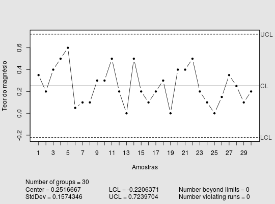
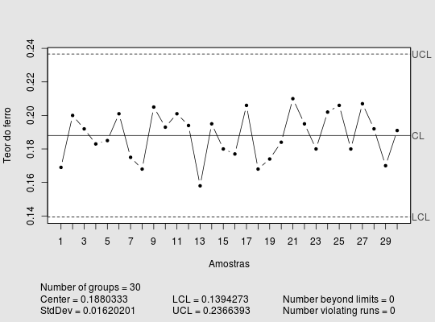

Conjunto de dados de teor de elementos químicos resultantes de análises de laboratório em 30 amostras unitárias.
Um data.frame com 30 observações e 8 variáveis, em que
amostramagnesferrofosforpotasscalcioaluminiovanadRAMOS et al. (2013), pág. 138.
data(RamosAnC8)#> Warning: data set ‘RamosAnC8’ not foundlibrary(qcc) qcc(RamosAnC8$magnes, type = "xbar.one", xlab = "Amostras", ylab = "Teor do magnésio", title = "")#> List of 11 #> $ call : language qcc(data = RamosAnC8$magnes, type = "xbar.one", xlab = "Amostras", ylab = "Teor do magnésio", title = "") #> $ type : chr "xbar.one" #> $ data.name : chr "RamosAnC8$magnes" #> $ data : num [1:30, 1] 0.35 0.2 0.4 0.5 0.6 0.05 0.1 0.1 0.3 0.3 ... #> ..- attr(*, "dimnames")=List of 2 #> $ statistics: Named num [1:30] 0.35 0.2 0.4 0.5 0.6 0.05 0.1 0.1 0.3 0.3 ... #> ..- attr(*, "names")= chr [1:30] "1" "2" "3" "4" ... #> $ sizes : int [1:30] 1 1 1 1 1 1 1 1 1 1 ... #> $ center : num 0.252 #> $ std.dev : num 0.157 #> $ nsigmas : num 3 #> $ limits : num [1, 1:2] -0.221 0.724 #> ..- attr(*, "dimnames")=List of 2 #> $ violations:List of 2 #> - attr(*, "class")= chr "qcc"qcc(RamosAnC8$ferro, type = "xbar.one", xlab = "Amostras", ylab = "Teor do ferro", title = "")#> List of 11 #> $ call : language qcc(data = RamosAnC8$ferro, type = "xbar.one", xlab = "Amostras", ylab = "Teor do ferro", title = "") #> $ type : chr "xbar.one" #> $ data.name : chr "RamosAnC8$ferro" #> $ data : num [1:30, 1] 0.169 0.2 0.192 0.183 0.185 0.201 0.175 0.168 0.205 0.193 ... #> ..- attr(*, "dimnames")=List of 2 #> $ statistics: Named num [1:30] 0.169 0.2 0.192 0.183 0.185 0.201 0.175 0.168 0.205 0.193 ... #> ..- attr(*, "names")= chr [1:30] "1" "2" "3" "4" ... #> $ sizes : int [1:30] 1 1 1 1 1 1 1 1 1 1 ... #> $ center : num 0.188 #> $ std.dev : num 0.0162 #> $ nsigmas : num 3 #> $ limits : num [1, 1:2] 0.139 0.237 #> ..- attr(*, "dimnames")=List of 2 #> $ violations:List of 2 #> - attr(*, "class")= chr "qcc"